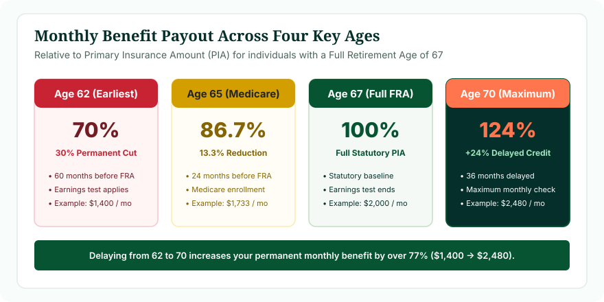
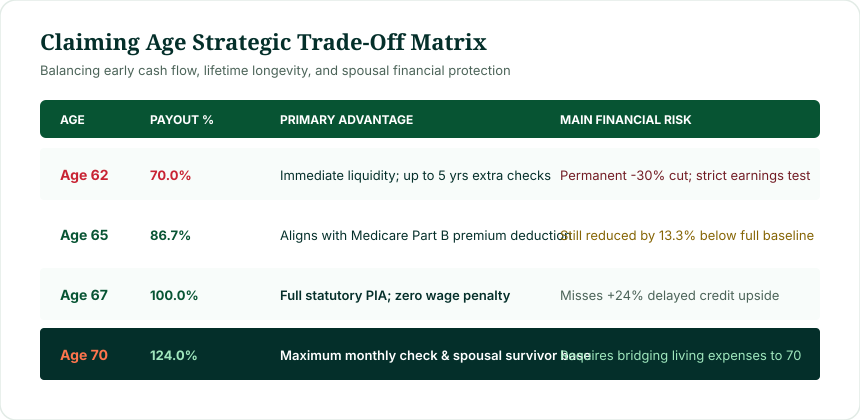

Social Security benefits do not automatically increase simply because you have another birthday while working. Rather, your claiming age relative to your statutory Full Retirement Age (FRA) dictates the percentage of your Primary Insurance Amount (PIA) that you receive for the rest of your life:
- Age 62: The earliest claiming age for retirement benefits. For workers born in 1960 or later, claiming at 62 results in a permanent 30.0% reduction (70.0% of PIA).
- Age 65: The universal Medicare enrollment milestone, but no longer Full Retirement Age for anyone retiring today.
- Age 66: Statutory FRA only for workers born between 1943 and 1954. For those born 1955–1959, FRA includes additional months (66 + 2m to 10m).
- Age 67: Statutory FRA for all workers born in 1960 or later, yielding 100% of your PIA with zero earnings test penalties.
- Age 70: The maximum delayed claiming milestone. Benefits accumulate +8% annual delayed retirement credits, yielding up to 124% of your PIA (or 132% for older cohorts). Credits stop permanently at 70.
Your age alone does not determine the dollar size of your monthly check. Your 35 highest-earning career wage years determine your baseline Primary Insurance Amount, and your claiming age applies an actuarial percentage multiplier to that baseline. To pinpoint your exact milestone dates, use our verified Social Security Age Calculator.
Does Social Security Increase With Age?
A common misconception among future retirees is that Social Security functions like an aging annuity where benefits increase each year automatically. In statutory reality, Social Security retirement benefits only increase with age under specific legal conditions:
- If you have NOT yet claimed benefits: Each month you delay claiming past age 62 reduces your early claiming penalty or earns Delayed Retirement Credits (DRCs) after FRA. This increases the statutory percentage applied to your baseline Primary Insurance Amount until you reach age 70.
- If you HAVE already claimed benefits: Once you begin collecting retirement benefits, your base percentage is locked for life. Your benefit will only increase due to annual federal Cost-of-Living Adjustments (COLA) or if continued high earnings replace a lower-earning year in your top 35 wage calculation history.
Consequently, simply getting older does not make your benefits jump. The critical financial lever is your decision of when to activate your claim relative to the statutory thresholds established under Title II of the Social Security Act.

Figure 1: Statutory payout percentages relative to Primary Insurance Amount (PIA) for workers with an FRA of 67.
Social Security Benefits at Age 62 (The Earliest Gateway)
Under Section 202(a) of the Social Security Act, age 62 is the earliest statutory age at which fully insured workers can elect to receive retirement benefits. However, electing early retirement comes with permanent trade-offs:
- Permanent Benefit Reduction: Because you are expected to collect monthly checks across a longer retirement lifespan, the SSA applies an actuarial reduction formula. For individuals with an FRA of 67, claiming at exactly 62 results in a permanent 30.0% benefit cut.
- Retirement Earnings Test: If you continue working while claiming benefits before your Full Retirement Age, your monthly benefits are subject to the Retirement Earnings Test. In 2025, the SSA withholds $1 in benefits for every $2 earned above the annual exempt limit of $23,400.
- The First-Month Rule: To receive benefits for age 62, federal law requires you to be 62 throughout the entire calendar month. Unless you were born on the 1st or 2nd day of a month, your first eligible benefit month is generally the month following your 62nd birthday.
For an in-depth exploration of whether early claiming makes sense for your personal financial situation, consult our detailed analysis on Can You Get Social Security at 62?.
Social Security Benefits at Age 65 (The Medicare Milestone)
For decades, age 65 was synonymous with American retirement. However, under current federal law, age 65 is no longer the Full Retirement Age for any living worker claiming Social Security.
Workers born in 1937 or earlier were the last Americans with an FRA of 65. Today, age 65 serves as a critical healthcare boundary rather than a Social Security milestone:
- Medicare Eligibility: Almost all American citizens become eligible for Medicare Part A and Part B at age 65. You must proactively enroll during your 7-month Initial Enrollment Period (starting 3 months before your 65th birthday month), regardless of whether you claim Social Security.
- Sub-FRA Benefit Reduction: If a worker born in 1960 claims Social Security at age 65 (24 months before their FRA of 67), their monthly benefit is permanently reduced by 13.33% (receiving 86.67% of their PIA).
- Medicare Premium Deductions: If you are already receiving Social Security at 65, your Medicare Part B monthly premiums are automatically deducted from your Social Security checks.
Social Security Benefits at Age 66 (The Transition Plateau)
Age 66 holds a unique place in Social Security history. Under the 1983 Amendments designed by the Greenspan Commission, age 66 served as the statutory Full Retirement Age for the core Baby Boomer cohort:
| Birth Year | Full Retirement Age (FRA) | Claiming at 66 Result |
|---|---|---|
| 1943–1954 | 66 Years Flat | 100.0% of PIA (Full Unreduced Benefit) |
| 1955 | 66 Years + 2 Months | 98.89% of PIA (2 Months Early Reduction) |
| 1956 | 66 Years + 4 Months | 97.78% of PIA (4 Months Early Reduction) |
| 1957 | 66 Years + 6 Months | 96.67% of PIA (6 Months Early Reduction) |
| 1958 | 66 Years + 8 Months | 95.56% of PIA (8 Months Early Reduction) |
| 1959 | 66 Years + 10 Months | 94.44% of PIA (10 Months Early Reduction) |
| 1960 or Later | 67 Years Flat | 93.33% of PIA (12 Months Early Reduction) |
If you were born in 1960 or later, claiming at age 66 means you are claiming 12 months ahead of your FRA, resulting in a permanent 6.67% reduction.
Social Security Benefits at Age 67 (The Modern Statutory Baseline)
For everyone born in 1960 or later, age 67 is statutory Full Retirement Age. Reaching age 67 unlocks three fundamental advantages:
- 100% Primary Insurance Amount: You receive your full unreduced baseline entitlement without early retirement haircuts.
- Earnings Test Abolished: In the calendar month you reach FRA, the Retirement Earnings Test disappears completely. You can earn an unlimited salary from employment without a single dollar withheld from your Social Security checks.
- Clean Spousal Baseline: If your spouse claims spousal benefits based on your work record, reaching your FRA ensures they can qualify for their maximum 50% spousal entitlement (assuming they also wait until their own FRA).
To verify the statutory evolution of FRA across generations, read our comprehensive guide to What Is Full Retirement Age for Social Security?.
Social Security Benefits at Age 70 (The Maximum Benefit Cap)
Delaying your Social Security claim past Full Retirement Age is one of the few guaranteed, risk-free financial growth mechanisms in retirement planning:
Delayed Retirement Credit Rate
Under Section 202(w) of the Social Security Act, workers whose FRA is 67 receive an additional 24.0% in permanent monthly benefits by waiting until age 70 (growing from 100% to 124% of PIA).
However, age 70 represents the absolute ceiling for Delayed Retirement Credits:
- Credits Stop Permanently: Once you reach your 70th birthday, delayed retirement credits stop accruing. Delaying your claim to age 71 or 72 yields zero additional benefit and forfeits monthly checks permanently.
- Survivor Benefit Anchor: If you are the higher-earning spouse, waiting until 70 locks in the largest possible survivor benefit protection for your surviving spouse after your death.
Social Security Benefits by Age Chart (Ages 62 through 70)
The following master reference table illustrates how statutory claiming status, percentage multipliers, and earnings limitations evolve year-by-year for individuals born in 1960 or later (FRA = 67):
| Claiming Age | Statutory Status | % of PIA Payout | Monthly on $2,000 PIA | Earnings Test Applied? |
|---|---|---|---|---|
| Age 62 | Earliest Claiming | 70.00% | $1,400 / mo | Yes ($23,400 annual cap) |
| Age 63 | Early Claiming (-48 mos) | 75.00% | $1,500 / mo | Yes ($23,400 annual cap) |
| Age 64 | Early Claiming (-36 mos) | 80.00% | $1,600 / mo | Yes ($23,400 annual cap) |
| Age 65 | Medicare Milestone (-24 mos) | 86.67% | $1,733 / mo | Yes ($23,400 annual cap) |
| Age 66 | Early Claiming (-12 mos) | 93.33% | $1,867 / mo | Yes ($23,400 annual cap) |
| Age 67 | Full Retirement Age (FRA) | 100.00% | $2,000 / mo | No (Unlimited Earnings) |
| Age 68 | Delayed Credit (+12 mos) | 108.00% | $2,160 / mo | No (Unlimited Earnings) |
| Age 69 | Delayed Credit (+24 mos) | 116.00% | $2,320 / mo | No (Unlimited Earnings) |
| Age 70 | Maximum Statutory Cap | 124.00% | $2,480 / mo | No (Unlimited Earnings) |
Note: Percentages apply strictly to individuals with an FRA of 67. If your birth year was before 1960, your FRA is lower and your age 62 through 66 multipliers are proportionally higher. Check our dedicated Social Security Retirement Age Chart for year-by-year cohort tables.

Figure 2: Strategic trade-off matrix balancing early liquidity against lifetime monthly security.
Why Social Security Benefits Depend on Your Birth Year
Two individuals who both celebrate their 65th birthday in different calendar decades experience completely different Social Security rules because the law evaluates eligibility based on calendar birth year:
Person A (Born 1954)
Reached age 66 in 2020. Because their birth year falls into the 1943–1954 bracket, their Full Retirement Age was 66 flat. Reaching age 66 unlocked 100% of their PIA immediately.
Person B (Born 1958)
Turned 66 in 2024. Under the phase-in schedule, their Full Retirement Age is 66 years and 8 months. At age 66, their benefit was still reduced by 4.44%.
Person C (Born 1960)
Reaches age 66 in 2026. Their Full Retirement Age is 67 flat. Claiming at age 66 results in a permanent 6.67% reduction.
For a detailed breakdown of how your birth cohort is treated under federal law, review our analysis on Social Security Retirement Age by Birth Year.
Social Security at 62 vs 65 vs 67 vs 70: Key Trade-offs
Deciding between the four anchor claiming ages involves balancing three competing financial dynamics:
- Immediate Liquidity vs Monthly Payout: Claiming at 62 provides cash immediately (up to 96 checks before age 70), but each check is 43.5% smaller than the check you would receive by waiting until 70 ($1,400 vs $2,480 on a $2,000 PIA).
- Longevity & Break-Even Math: The total cumulative lifetime dollars received between claiming at 62 versus waiting for FRA 67 generally intersect between ages 78 and 80. If you live past 80, waiting until FRA produces higher cumulative wealth.
- Healthcare Coordination: Age 65 requires proactive Medicare coordination regardless of Social Security status. Delaying Social Security does not prevent you from enrolling in Medicare.
Explore the full actuarial breakdown in our side-by-side study: Age 62 vs 66 vs 67 vs 70: When to Claim Social Security.
Does Waiting to Claim Social Security Increase Your Benefit?
Yes. Every single month you postpone claiming between age 62 and age 70 increases your monthly check. The increases occur through two statutory mechanisms:
- Reduction Avoidance (Ages 62 to FRA): Each month you delay prior to FRA eliminates 5/9 of 1% (first 36 months) or 5/12 of 1% (months 37 to 60) of early reduction penalties.
- Credit Accrual (FRA to Age 70): Each month you delay after reaching your FRA adds two-thirds of 1% (+8% annually) in guaranteed Delayed Retirement Credits.
This monthly progression means you do not have to wait for whole birthdays. Claiming at age 63 and 4 months yields a higher benefit than claiming at exactly 63.
What Determines Your Actual Social Security Benefit?
It is vital to distinguish between an age calculator and a benefit dollar estimator. Age Calculator Lab specializes in date arithmetic, statutory cohort assignment, and milestone tracking. Your actual monthly dollar amount is calculated by the Social Security Administration based on:
- Average Indexed Monthly Earnings (AIME): The SSA indexes your historical earnings for national wage inflation and selects your 35 highest-earning career years.
- Primary Insurance Amount (PIA) Formula: The AIME is passed through statutory bend points (90%, 32%, and 15% tiers) to establish your base monthly benefit at FRA.
- Claiming Age Multiplier: Your claiming age relative to FRA applies the percentage multiplier (70% to 124%).
- Cost-of-Living Adjustments (COLA): Annual compound inflation adjustments applied after age 62.
Find Your Social Security Retirement Milestones
Rather than guessing which cohort rules apply to your birth date, use our verified tool. Enter your date of birth to calculate:
- Your statutory Full Retirement Age in exact years and months.
- Your exact calendar attainment dates for Age 62, FRA, and Age 70.
- Your personalized early reduction and delayed credit percentages.
- The exact date when the Retirement Earnings Test expires for your career.
Can You Work While Receiving Social Security Benefits?
Yes, you can work while receiving Social Security, but the rules change dramatically depending on whether you have reached Full Retirement Age:
- Under FRA for the Entire Year: The annual earnings limit is $23,400 (2025). The SSA withholds $1 from benefits for every $2 earned above this limit.
- In the Year You Reach FRA: A higher limit applies ($62,160 in 2025), and only earnings prior to the month of FRA attainment are counted. The withholding rate drops to $1 for every $3 above the limit.
- Month of FRA Attainment and Beyond: Zero earnings limits. You can earn an unlimited salary without losing a single cent in benefits.
- Recalculation at FRA: Withheld benefits are not forfeited forever. When you reach FRA, the SSA recalculates your monthly benefit upward to credit back the withheld months.
Is Social Security Age the Same as Medicare Age?
No. Social Security and Medicare are distinct federal programs governed by different statutory criteria:
Do not wait until your Full Retirement Age (age 67) to investigate Medicare. Medicare Part A and Part B eligibility begins at age 65. If you do not have qualifying employer group health coverage when you turn 65, failing to enroll during your Initial Enrollment Period can trigger permanent lifetime late enrollment penalties (10% per 12 months delayed for Part B).
Worked Scenario: A Person Born in 1960
Examine how the timeline unfolds for an individual born on March 15, 1960:
Scenario: Born March 15, 1960 (Baseline PIA = $2,200)
Earliest Eligibility (Age 62): Reached March 15, 2022. Claiming immediately yields 70.0% of PIA: $1,540 / month. Earnings test applies to all wages over annual limit.
Medicare Milestone (Age 65): Reached March 15, 2025. Must enroll in Medicare Part A/B. If claiming Social Security now, benefit is 86.67% ($1,907 / mo).
Full Retirement Age (Age 67): Attained March 15, 2027. Monthly benefit reaches 100% of PIA: $2,200 / month. Earnings test vanishes completely.
Maximum Claiming Age (Age 70): Reached March 15, 2030. Delayed credits boost benefit to 124%: $2,728 / month ($1,188/mo higher than claiming at 62).
Why You Shouldn't Look at Age Alone
When planning your retirement, viewing age as a solitary variable leads to flawed financial decisions. Two people who are both 66 years old may have drastically different strategic imperatives:
- Different Statutory Baselines: Depending on birth months and years, one person may be past FRA while another is still subject to early claiming haircuts.
- Spousal Dynamics: The claiming timing of the primary earner dictates the lifetime survivor benefits available to a lower-earning or non-working surviving spouse.
- Taxation of Benefits: Depending on your combined income (adjusted gross income + nontaxable interest + 50% of Social Security), up to 85% of your benefits may be subject to federal income taxes.
- Health & Portfolio Assets: Longevity expectations and available 401(k)/IRA bridge assets dictate whether you can comfortably delay claiming to capture 8% annual growth.
Frequently Asked Questions
Does Social Security increase when you turn 65?
Not automatically. For workers retiring today, age 65 is no longer Full Retirement Age. Age 65 is the milestone for Medicare eligibility. Your Social Security benefit does not increase simply because you reach 65 unless you choose to start claiming after delaying from 62.
How much Social Security do you get at 62?
There is no single universal dollar amount. If your Full Retirement Age is 67, claiming at age 62 provides exactly 70.0% of your Primary Insurance Amount (PIA), representing a permanent 30.0% monthly cut. Your exact dollar payout depends on your 35 highest-earning career wage years.
Is 65 full retirement age for Social Security?
No. Age 65 was Full Retirement Age only for workers born in 1937 or earlier. For all Americans born in 1960 or later, Full Retirement Age is 67.
Is 66 full retirement age?
Age 66 is Full Retirement Age only for workers born between 1943 and 1954. For workers born between 1955 and 1959, FRA increases in two-month increments.
Is 67 full retirement age?
Yes. For anyone born in 1960 or later, statutory Full Retirement Age is 67 years flat.
Does Social Security increase after 67?
Yes. If you wait past age 67, you earn Delayed Retirement Credits of 8% per year (two-thirds of 1% per month) until age 70.
Does Social Security increase after 70?
No. Delayed retirement credits stop permanently at age 70. You should never delay claiming past your 70th birthday.
Can I collect Social Security at 62 and keep working?
Yes, but your earnings will be subject to the Retirement Earnings Test until you reach your Full Retirement Age. In 2025, $1 is withheld for every $2 earned above $23,400.
How do I find my Social Security retirement age?
Enter your birth date into our verified Social Security Age Calculator to determine your exact Full Retirement Age and calendar milestone dates.
Methodology & Verification Standards
This guide was developed by Navjeet Kamboj using statutory calculations derived from Title II of the United States Social Security Act and official Program Operations Manual System (POMS) guidelines published by the Social Security Administration:
- Statutory Retirement Schedule: 42 U.S. Code § 416(l) (Retirement age specifications under the 1983 Social Security Amendments).
- Early Claiming Reductions: 42 U.S. Code § 402(q) (Five-ninths and five-twelfths of 1 percent monthly reduction formula).
- Delayed Retirement Credits: 42 U.S. Code § 402(w) (Two-thirds of 1 percent monthly credit rate up to age 70).
- Retirement Earnings Test: 42 U.S. Code § 403(f) (Annual exempt amounts and benefit withholding mechanics).
- POMS Attribution: GN 00302.010 (Attainment of Age legal principles governing birthday calculations).